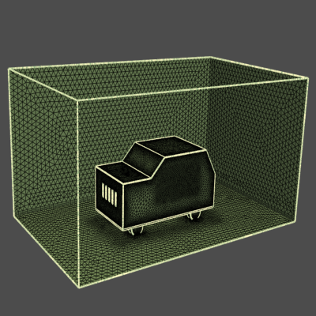

Note
Go to the end to download the full example code
Wrapping a Toy Car for a Flow Analysis#
Summary: This example illustrates how to wrap a toy car for a flow analysis.
Objective#
In this example, we will wrap a toy car and volume mesh with a tetrahedral mesh with prisms. We will use several meshing utilities available in the lucid class for convenience and ease.
Procedure#
Launch Ansys Prime Server instance and instantiate meshing utilities from lucid class.
Import geometry.
Coarse wrap parts with holes to cleanup.
Extract fluid region using wrapper.
Check wrap surface is closed and suitable quality.
Mesh only fluid with tetrahedral elements and boundary layer refinement.
Create face zones from labels imported from geometry.
Print statistics on generated mesh.
Improve mesh quality.
Write a cas file for use in the Fluent solver.
Exit the PyPrimeMesh session.
Launch Ansys Prime Server#
Import all necessary modules and launch an instance of Ansys Prime Server. From the PyPrimeMesh client get the model. Instantiate meshing utilities from lucid class.
import os
import tempfile
import ansys.meshing.prime as prime
from ansys.meshing.prime.graphics import Graphics
prime_client = prime.launch_prime()
model = prime_client.model
display = Graphics(model=model)
mesh_util = prime.lucid.Mesh(model)
Import Geometry#
Download the toy car geometry file (.fmd file exported by SpaceClaim). Import geometry and display everything except tunnel.
Close Holes#
Several parts are open surfaces (with holes). Coarse wrap to close holes and delete originals. We could use leakage detection to close these regions. Here we use a coarse wrap and disable feature edge refinement to walk over the holes. As this is not the final wrap we do not need to remesh after the wrap. Wrapping each object in turn we avoid the coarse wrap bridging across narrow gaps.
coarse_wrap = {"cabin": 1.5, "exhaust": 0.6, "engine": 1.5}
for part_name in coarse_wrap:
# Each open part before wrap
display(scope=prime.ScopeDefinition(model, part_expression=part_name))
closed_part = mesh_util.wrap(
input_parts=part_name,
max_size=coarse_wrap[part_name],
remesh_postwrap=False,
enable_feature_octree_refinement=False,
)
# Closed part with no hole
display(scope=prime.ScopeDefinition(model, part_expression=closed_part.name))


{kind=link}
Extract Fluid using Wrapper#
Wrap full model and extract largest internal region as the fluid. Create edges at intersecting regions to improve quality. Refining mesh to avoid contact between different parts. The new wrap object replaces all original geometry unless “keep_input” is set to TRUE. Volumes are generated from the wrap for use later.
wrap_part = mesh_util.wrap(
min_size=0.1,
max_size=2.0,
region_extract=prime.WrapRegion.LARGESTINTERNAL,
create_intersection_loops=True,
contact_prevention_size=0.1,
)
print(model)
Part Summary:
Part Name: __wrap__.3
Part ID: 23
1 Edge Zonelets
93 Face Zonelets
0 Cell Zonelets
0 Edge Zones
Edge Zone Name(s) : []
5 Face Zones
Face Zone Name(s) : [surface, surface.1, cabin, exhaust, engine]
6 Volume Zones
Volume Zone Name(s) : [__wrap__.2, __wrap__.1, __wrap__, component25, component24, tunnel.1]
24 Label(s)
Names: [___geom_features___, __extracted__features__, __intersect_loops__, __wrap__, __wrap__.1, __wrap__.2, cabin, component21, component22, component24, component25, engine, exhaust, ground, inlet, outer, outlet, overlap_floor, tunnel, unreferenced, wheel_1, wheel_2, wheel_3, wheel_4]
Bounding box (-31.1366 -59.1336 1.49043)
(29.3366 40.1337 52.0558)
Check Wrap#
Check wrap surface is closed and suitable quality to use as surface mesh.
scope = prime.ScopeDefinition(model=model, part_expression=wrap_part.name)
diag = prime.SurfaceSearch(model)
diag_params = prime.SurfaceDiagnosticSummaryParams(
model,
scope=scope,
compute_free_edges=True,
compute_multi_edges=True,
compute_self_intersections=True,
)
diag_res = diag.get_surface_diagnostic_summary(diag_params)
print('Number of free edges', diag_res.n_free_edges)
print('Number of multi edges', diag_res.n_multi_edges)
print('Number of self intersections', diag_res.n_self_intersections)
face_quality_measures = [prime.FaceQualityMeasure.SKEWNESS, prime.FaceQualityMeasure.ASPECTRATIO]
quality_params = prime.SurfaceQualitySummaryParams(
model=model, scope=scope, face_quality_measures=face_quality_measures, quality_limit=[0.9, 20]
)
quality = prime.SurfaceSearch(model)
qual_summary_res = quality.get_surface_quality_summary(quality_params)
for summary_res in qual_summary_res.quality_results:
print("\nMax value of ", summary_res.measure_name, ": ", summary_res.max_quality)
print("Faces above limit: ", summary_res.n_found)
Number of free edges 0
Number of multi edges 0
Number of self intersections 0
Max value of Skewness : 0.881896
Faces above limit: 0
Max value of AspectRatio : 8.8903
Faces above limit: 0
Create Zones#
Create face zones from labels imported from geometry that can be used in the solver to define boundary conditions. If specifying individual labels to create zones the order is important. Last label in the list will win. Providing no label_expression will flatten all labels into zones. For example, if “LabelA” and “LabelB” are overlapping three zones will be created; “LabelA”, “LabelB” and “LabelA_LabelB”.
mesh_util.create_zones_from_labels()
print(model)
Part Summary:
Part Name: __wrap__.3
Part ID: 23
1 Edge Zonelets
93 Face Zonelets
0 Cell Zonelets
0 Edge Zones
Edge Zone Name(s) : []
21 Face Zones
Face Zone Name(s) : [surface, surface.1, cabin, exhaust, engine, __wrap__.2_engine_unreferenced, __wrap__.1_exhaust_unreferenced, __wrap___cabin_unreferenced, unreferenced_wheel_2, unreferenced_wheel_3, unreferenced_wheel_4, unreferenced_wheel_1, outer_unreferenced, inlet_tunnel, ground_overlap_floor_tunnel, tunnel_unreferenced, outlet_tunnel, component21_unreferenced, component22_unreferenced, component24_unreferenced, component25_unreferenced]
6 Volume Zones
Volume Zone Name(s) : [__wrap__.2, __wrap__.1, __wrap__, component25, component24, tunnel.1]
24 Label(s)
Names: [___geom_features___, __extracted__features__, __intersect_loops__, __wrap__, __wrap__.1, __wrap__.2, cabin, component21, component22, component24, component25, engine, exhaust, ground, inlet, outer, outlet, overlap_floor, tunnel, unreferenced, wheel_1, wheel_2, wheel_3, wheel_4]
Bounding box (-31.1366 -59.1336 1.49043)
(29.3366 40.1337 52.0558)
Volume Mesh#
Mesh only fluid volume with tetrahedral elements and boundary layer refinement. Not meshing other volumetric regions. Volume zones exist already for volume meshing and passing to the solver. The largest face zonelet is used by default to define volume zone names at creation. After volume meshing we can see we have a cell zonelet in the part summary.
volume = prime.lucid.VolumeScope(
part_expression=wrap_part.name,
entity_expression="tunnel*",
scope_evaluation_type=prime.ScopeEvaluationType.ZONES,
)
# using expressions to define which surfaces to grow inflation layers from
mesh_util.volume_mesh(
scope=volume,
prism_layers=3,
prism_surface_expression="*cabin*,*component*,*engine*,*exhaust*,*ground*,*outer*,*wheel*",
prism_volume_expression="tunnel*",
)
scope = prime.ScopeDefinition(
model,
label_expression="*cabin*,*component*,*engine*,*exhaust*,*ground*,*outer*,*wheel*,*outlet*",
)
display(update=True, scope=scope)
print(model)
Part Summary:
Part Name: __wrap__.3
Part ID: 23
1 Edge Zonelets
93 Face Zonelets
1 Cell Zonelets
0 Edge Zones
Edge Zone Name(s) : []
21 Face Zones
Face Zone Name(s) : [surface, surface.1, cabin, exhaust, engine, __wrap__.2_engine_unreferenced, __wrap__.1_exhaust_unreferenced, __wrap___cabin_unreferenced, unreferenced_wheel_2, unreferenced_wheel_3, unreferenced_wheel_4, unreferenced_wheel_1, outer_unreferenced, inlet_tunnel, ground_overlap_floor_tunnel, tunnel_unreferenced, outlet_tunnel, component21_unreferenced, component22_unreferenced, component24_unreferenced, component25_unreferenced]
6 Volume Zones
Volume Zone Name(s) : [__wrap__.2, __wrap__.1, __wrap__, component25, component24, tunnel.1]
24 Label(s)
Names: [___geom_features___, __extracted__features__, __intersect_loops__, __wrap__, __wrap__.1, __wrap__.2, cabin, component21, component22, component24, component25, engine, exhaust, ground, inlet, outer, outlet, overlap_floor, tunnel, unreferenced, wheel_1, wheel_2, wheel_3, wheel_4]
Bounding box (-31.1366 -59.1336 1.49043)
(29.3366 40.1337 52.0558)
Print Mesh Stats#
Print statistics on generated mesh.
vtool = prime.VolumeMeshTool(model=model)
result = vtool.check_mesh(part_id=wrap_part.id, params=prime.CheckMeshParams(model=model))
print("Non positive volumes:", result.has_non_positive_volumes)
print("Non positive areas:", result.has_non_positive_areas)
print("Invalid shape:", result.has_invalid_shape)
print("Left handed faces:", result.has_left_handed_faces)
quality = prime.VolumeSearch(model)
scope = prime.ScopeDefinition(model, part_expression=wrap_part.name)
part_summary_res = wrap_part.get_summary(
prime.PartSummaryParams(model=model, print_id=False, print_mesh=True)
)
print("\nNo. of cells : ", part_summary_res.n_cells)
qual_summary_res = quality.get_volume_quality_summary(
prime.VolumeQualitySummaryParams(
model=model,
scope=scope,
cell_quality_measures=[prime.CellQualityMeasure.SKEWNESS],
quality_limit=[0.95],
)
)
for summary_res in qual_summary_res.quality_results_part:
print("\nMax value of ", summary_res.measure_name, ": ", summary_res.max_quality)
print("Cells above limit: ", summary_res.n_found)
Non positive volumes: False
Non positive areas: False
Invalid shape: False
Left handed faces: False
No. of cells : 3317673
Max value of Skewness : 0.999072
Cells above limit: 150
Improve Quality#
Mesh quality is poor. We can use Auto-Node Move to improve the mesh.
improve = prime.VolumeMeshTool(model=model)
params = prime.AutoNodeMoveParams(
model=model,
quality_measure=prime.CellQualityMeasure.SKEWNESS,
target_quality=0.95,
dihedral_angle=90,
n_iterations_per_node=50,
restrict_boundary_nodes_along_surface=True,
n_attempts=10,
)
improve.improve_by_auto_node_move(
part_id=wrap_part.id,
cell_zonelets=wrap_part.get_cell_zonelets(),
boundary_zonelets=wrap_part.get_face_zonelets(),
params=params,
)
result = vtool.check_mesh(part_id=wrap_part.id, params=prime.CheckMeshParams(model=model))
print("Non positive volumes:", result.has_non_positive_volumes)
print("Non positive areas:", result.has_non_positive_areas)
print("Invalid shape:", result.has_invalid_shape)
print("Left handed faces:", result.has_left_handed_faces)
qual_summary_res = quality.get_volume_quality_summary(
prime.VolumeQualitySummaryParams(
model=model,
scope=scope,
cell_quality_measures=[prime.CellQualityMeasure.SKEWNESS],
quality_limit=[0.95],
)
)
for summary_res in qual_summary_res.quality_results_part:
print("\nMax value of ", summary_res.measure_name, ": ", summary_res.max_quality)
print("Cells above limit: ", summary_res.n_found)
Non positive volumes: False
Non positive areas: False
Invalid shape: False
Left handed faces: False
Max value of Skewness : 0.949975
Cells above limit: 0
Write Mesh#
Write a cas file for use in the Fluent solver.
with tempfile.TemporaryDirectory() as temp_folder:
mesh_file = os.path.join(temp_folder, "toy_car_lucid.cas")
mesh_util.write(mesh_file)
assert os.path.exists(mesh_file)
print("\nExported file:\n", mesh_file)
Exported file:
/tmp/tmp72kh2mrc/toy_car_lucid.cas
Exit PyPrimeMesh#
prime_client.exit()
Total running time of the script: ( 3 minutes 15.836 seconds)